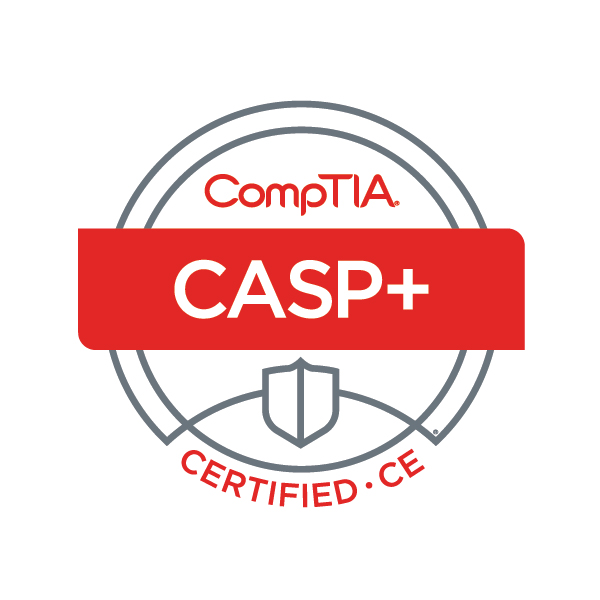

Luwai Wheagar
luwaiwheagar@gmail.com
Profile
Self motivated cybersecurity professional who is passionate about assessing, fortifying, and monitoring applications, systems, and networks.
Education
New Jersey Institute of Technology (NJIT), Newark, NJ
B.S., Information Technology Specializing in Network and Information Security, Dec 2019 GPA 3.842
Mercer County Community College (MCCC), West Windsor, NJ
A.A.S., Information Technology, Jan 2017 GPA 3.582
Certificate of Proficiency in Networking Engineering Technology, Jan 2017
Certifications
CompTIA CASP+ Dec 2023 – Dec 2026
CompTIA CNVP Apr 2022 – Dec 2026
CompTIA PenTest+ Apr 2022 – Dec 2026
CompTIA Security+ Oct 2020 – Dec 2026
CompTIA A+ May 2016 – May 2019
Endpoint Security Solutions (ESS) Administrator 201 ePO 5.10
Endpoint Security Solutions (ESS) Advanced Administrator 301 ePO 5.10
Computer Skills
Proficient: Security Assessment, Threat Modeling, Threat Detection, Vulnerability Management, Security Architecture/Engineering, Security Automation, Trellix/McAfee ePO ESS/HBSS, Tenable Security Center/Nessus, Wazuh SIEM, NMap, Metasploit Framework, Wireshark, Windows 7/8/10/11, Windows Server 2008/2012/2016/2019, CentOS/RHEL 7, Active Directory, Group Policy Management
Working Knowledge: Google Cloud Platform, VMWare ESXI, Network Switching/Routing, Kubernetes, Docker, Ansible, PowerShell, Bash, Python, Java, HTML, CSS, JavaScript, PHP, MySQL
Familiar: PKI, Apache, NGINX
Interpersonal Skills
Customer Service, Problem Solving, Communication, Detail Oriented, Teamwork
Work Experience
Innovative Defense Technologies (IDT), MT Laurel, NJ May 2018 – Present;
IT Intern, IT Engineer II, Information Systems Security Officer/Engineer (ISSO/E), Cyber Defense Analyst
Security Assessment: Performed security assessment on CI/CD Pipeline for software supply chain
Threat Modeling: Created Threat Modeling process along with various threat models
Threat Detection: Trellix/McAfee ePO ESS/HBSS, Wazuh SIEM
Vulnerability Assessment: Tenable Security Center/Nessus, SCAP, STIG, nvd.nist.gov, cve.mitre.org, www.cisa.gov
Vulnerability Mitigation: Trellix HIPS/HIDS, Trellix Firewall, Trellix DLP, WSUS, CentOS 7 RPM Repo
Risk Management: Assisted with documentation creation for configuration management and continous monitoring policy/procedures
Security Architecture/Engineering: Deployed Trellix ePO, Deployed Tenable Security Center, Deployed Wazuh SIEM, Deployed RH Satellite, and created backup solution implementation plan
Configuration Management: Group Policy Management, Ansible
System Administration: Active Directory, Group Policy, Powershell Scripts, Ansible, Bash Scripts
Network Configuration: Configuring Layer 3 Switches, DHCP Server, DNS Server
VMware ESXI Administration: Virtual Machine Creation, Virtual Machine Hardening, Virtual Networking
Created PowerShell and Bash scripts to offload System Event Logs and Java program to generate reports
Created PowerShell script to disable domain accounts which have not logged in within specified time period
Created Python script to enable privileged users to unlock, enable, and reset account password for standard domain users
Created Java program to perform malware scanning, logging, and generate access code on standalone system for connected media; then on a network connected system validate the access code of the media to transfer the data
Created Bash script to provision and harden RHEL 7 linux systems based on DCSA RHEL 7 STIG
Created PowerCLI script to harden VMWare ESXi servers based on DCSA VMWare ESXi STIG
Created PowerCLI script to harden VMWare Virtual Machines based on DCSA VMWare Virtual Machine STIG
Created PowerCLI script to assess VMWare ESXi servers based on DCSA VMWare ESXi STIG
Created PowerCLI script to assess VMWare Virtual Machines based on DCSA VMWare Virtual Machine STIG
Created PowerShell script to periodically change local administrator account password on Windows 10 systems
Created Bash script to periodically change root account password on RHEL 7 systems
Created Powershell script to perform silent remote installations/uninstallations of programs on Windows 10 systems
Created Full-Stack Web Application to manage, assign, notify, and track security related company trainings
New Jersey Institute of Technology (NJIT), Newark, NJ Sept 2017 – May 2018; Sept 2018 – May 2019; Sept 2019 – Dec 2019;
Telecommunications and Networks Student Technician
Mounting Cisco network switches and UPS
Installing Cisco IP desk phones
Resolving network related work-orders
WuXi AppTec XenoBiotic Laboratories, Plainsboro, NJ May 2017 – Aug 2017;
IT Intern
Imaging and configuring new and used laptops/thin clients
Troubleshooting thin-clients, laptops, desktops, and printers
Providing remote desktop support for Windows 7/8/10, Microsoft Office, Microsoft Outlook, Skype for Business, Cisco Webex
East Windsor Regional School District, East Windsor, NJ Jun 2016 – Sept 2016;
Summer Computer Maintenance Technician
Cleaning desktop internal components
Mounting wireless access points
Saker Shoprite of Lawrenceville, Lawrenceville, NJ Apr 2013 – Jun 2016; Sept 2016 – Apr 2017;
Night Customer Service Manager
Improve customer satisfaction by resolving customer service related issues
Efficiently manage staff resources to accomplish nightly task objectives
Print